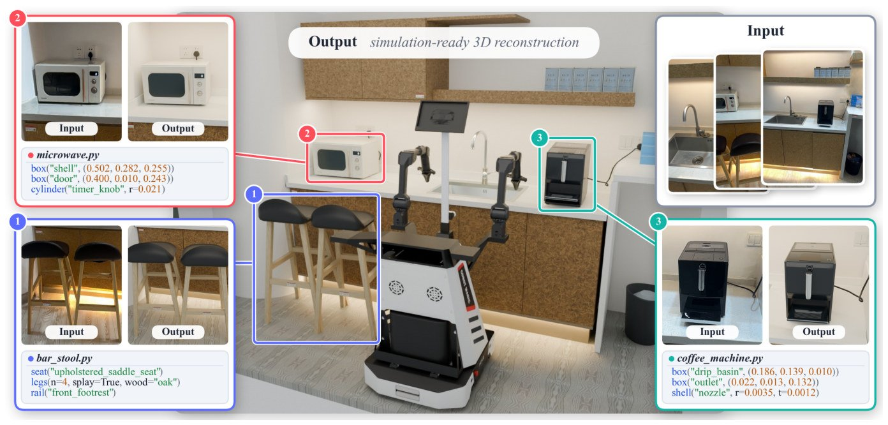
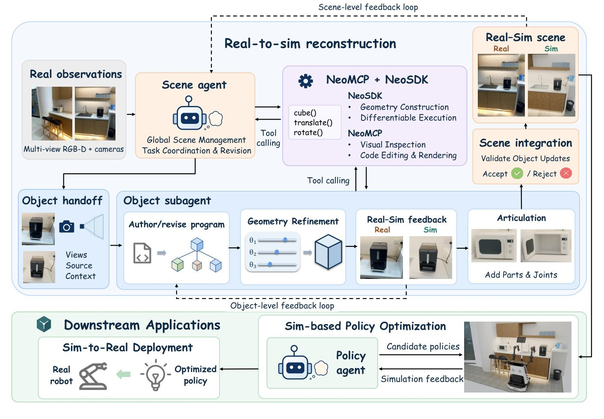
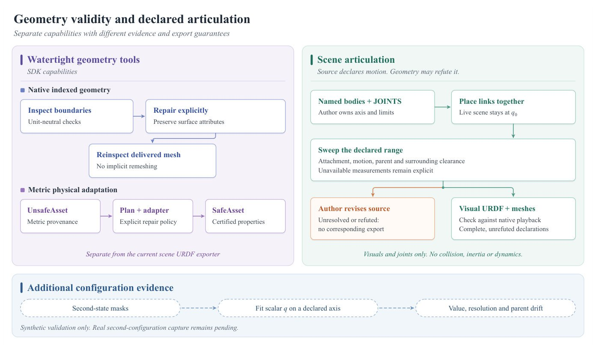
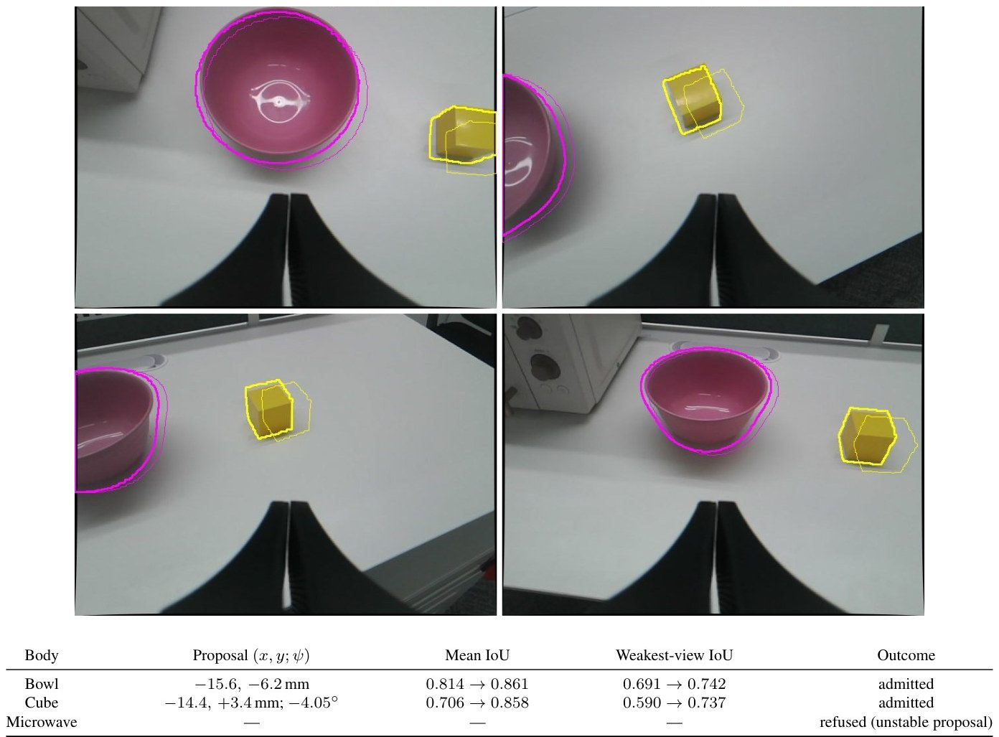
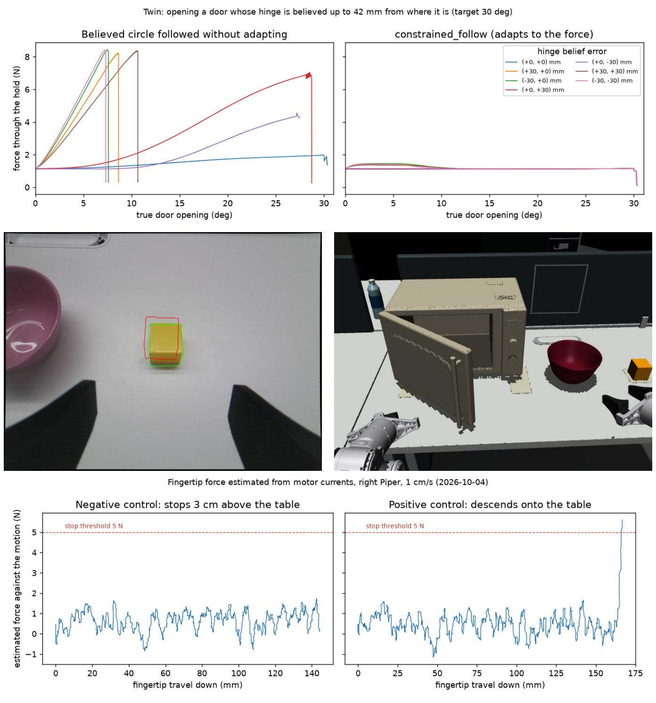
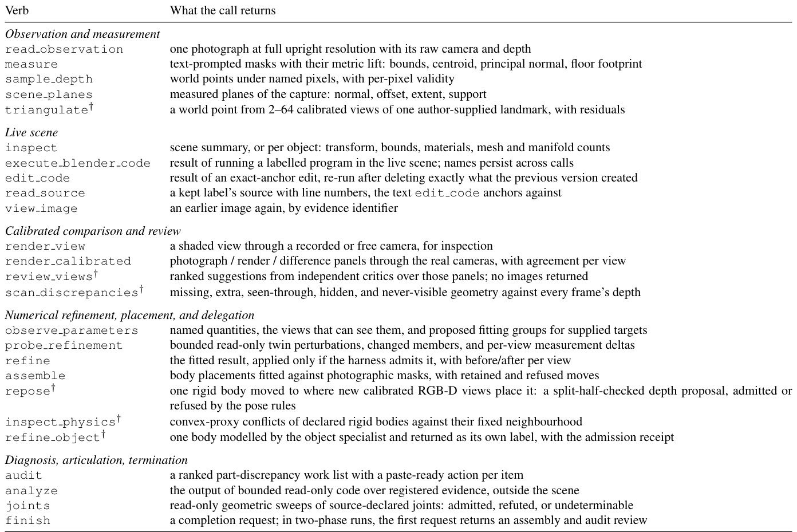
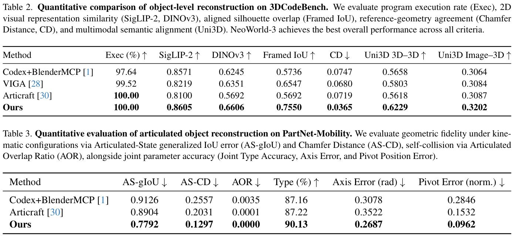
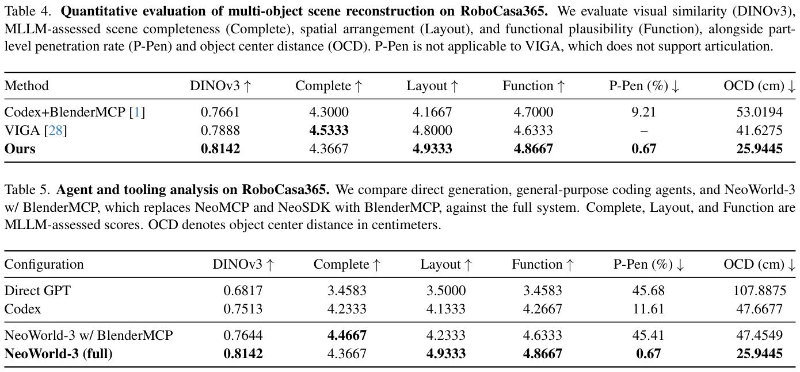
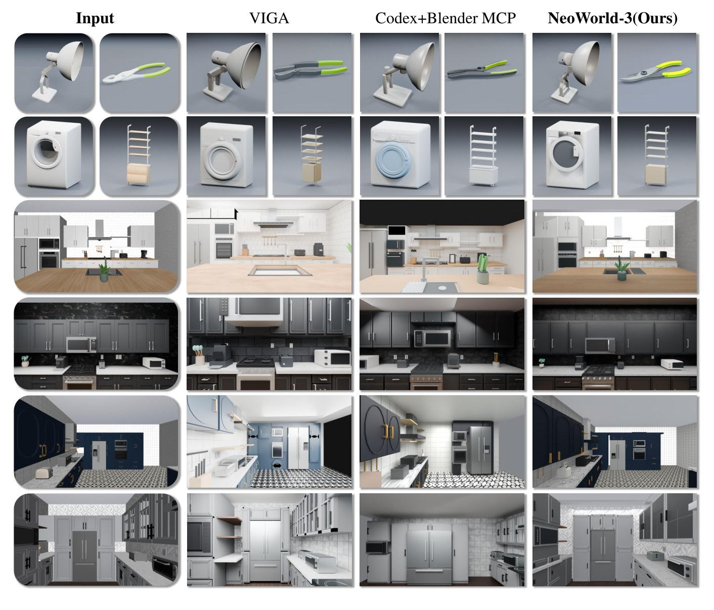
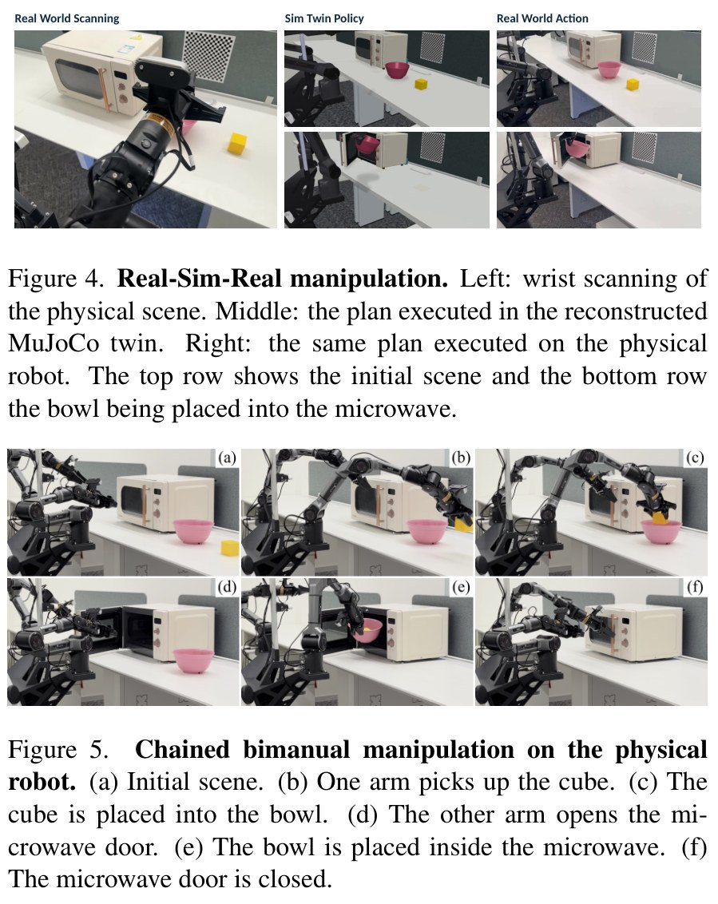

Agent-centric-real-to-sim · 归档于 2026-11-16
NeoWorld-3
NeoWorld-3: From Pixels to Code-Defined Physical Worlds
arXivPDF Project pageCode 代码库目前只有 README 和 LICENSE，README 写明这一版只有文档、不含实现源码（2026-11-18 查）
归档到 Agent-centric real-to-sim：coding agent 把多视角照片重建成可调的几何程序，检查关节和接触后导出 MuJoCo twin，给双臂真机规划。
TL;DR
- Problem
- 编码 agent 能把照片写成 Blender 代码，但尺寸靠 VLM 逐 token 去猜；mesh 不封闭、关节配错、零件互相穿插也没人检查，放进仿真器就出问题（§1）。
- Idea
- 重建结果就是一段可调程序 P = (S, θ, T)。VLM agent 通过 NeoMCP 的工具改程序结构 S；NeoSDK 在 tensor twin 里用采样加梯度拟合数值 θ，再查封闭性、关节扫掠和刚体接触；harness 只收照片证明更好的候选。场景由一个 coordinator 拆给每个物体的 worker。
- Result
- RoboCasa365 的 10 个厨房：零件穿插率 P-Pen 0.67%，Codex+BlenderMCP 是 9.21%；同一个 harness 换回 BlenderMCP 是 45.41%（Table 4、5）。3DCodeBench 物体 CD 0.0365，VIGA 0.0680（Table 2）。真机：双臂串联任务做了 3 次，约 136、137、109 s，没有成功率统计（B.3）。
Problem
编码 agent 能搭出像样的厨房，但尺寸靠 token 猜，穿插和关节错误没人查
Running example · 后面每个 stage 都跟着它走
Fig. 1 的厨房一角：真实厨房的 多视角 RGB-D + 相机（Fig. 2 的输入），画面里有 一台微波炉、一台咖啡机、两把吧凳、水槽和橱柜 → 想要：每个物体一段可调的 Python 程序（如 microwave.py：box("shell", (0.502, 0.282, 0.255))），零件不互相穿插，微波炉门有关节，整个场景能放进仿真器给机器人规划。
延伸（Stage 6）：同样的流程用在桌面上：微波炉 + 碗 + 50 mm 方块，重建成 MuJoCo twin，交给两台 AgileX Piper 真机（§4.6）。论文没说它和 Fig. 1 是不是同一台微波炉。

怎么读这张图
- 右上 Input：真实厨房的几张照片，就是例子的输入。
- 中间 Output（simulation-ready 3D reconstruction）：重建出的整个厨房。场景里还放了一台机器人模型，论文没说明它是哪台、做了什么。
- 左上 ② microwave.py：
box("shell", (0.502, 0.282, 0.255))、box("door", (0.400, 0.010, 0.243))、cylinder("timer_knob", r=0.021)。机身和门是两段独立的 box，所以门可以单独装关节。论文没写这些数的单位。 - 左下 ① bar_stool.py：框 ① 把两把吧凳一起圈住，只连到一个程序：
seat("upholstered_saddle_seat")、legs(n=4, splay=True, wood="oak")、rail("front_footrest")。 - 右下 ③ coffee_machine.py：很小的零件也是有名字的参数：
box("drip_basin", (0.186, 0.139, 0.010))、shell("nozzle", r=0.0035, t=0.0012)。
flowchart LR IN["例子输入
厨房多视角 RGB-D"] --> A1["生成式 image-to-3D
Pixal3D 等直接出 mesh"] A1 --> AX["微波炉是一整块
无部件无关节 Table 1"]:::gap IN --> B1["Codex + Blender MCP
通用 agent 写代码"] B1 --> BX["零件互相穿插
P-Pen 9.21% Table 4"]:::gap IN --> C1["VIGA
看渲染迭代改代码"] C1 --> CX["没有关节，物体放偏
OCD 41.6275 cm"]:::gap IN --> D1["Articraft
写带关节的资产"] D1 --> DX["尺寸对不准
CD 0.0719 Table 2"]:::gap
推断的部分：Pixal3D 一行只有 Table 1 的勾叉，论文没有跑它；VIGA 的“没有关节”出自 §4.1 和 Table 4 的注（P-Pen 记为 –），OCD 出自 Table 4；Articraft 没跑场景，数字是 3DCodeBench 物体的 CD。所有数字都来自 RoboCasa365 的 10 个厨房或 3DCodeBench，论文没有给 Fig. 1 这个厨房的数字。
根本问题：VLM 逐 token 写数值，几何精度不够；程序也没经过物理在环检查，mesh 不封闭、关节配错、零件互穿都发现不了（§1）。只有 NeoWorld-3 的 harness、工具仍是 BlenderMCP 时，P-Pen 还是 45.41%（Table 5）。 这篇的切入点：把重建写成可调程序：结构交给 agent，数值交给梯度，有效性交给 NeoSDK 的检查，harness 只收照片说更好的候选。
Related work
| 相关工作 | 解决什么 | 怎么解决 | 和本文的区别 |
|---|---|---|---|
| 同一问题 · 别的解法 | |||
| 专用 3D 编码 agent（本文所属） VIGA、Articraft、Articulate-Anything、3D-CoS | 用程序重建或生成结构化的 3D 资产 | VLM 写代码，看渲染迭代修改；Articraft 还生成关节 | 离散地改代码定不准数值，只看图不保证物理有效 → 本文加可微拟合，并检查封闭性、关节和接触 |
| 通用 coding agent + Blender MCP Codex + Blender MCP | 让通用 agent 直接在 Blender 里建模 | 社区 MCP 插件把 Blender 交给语言模型 | 没有专用 harness 和工具（§4.5：单用 Codex 重建质量有限）→ 本文 NeoMCP 每个 verb 有 schema、receipt，结果要过准入 |
| 关节 / sim-ready 资产生成 PhysX-Anything、URDF-Anything、SINGAPO、SPARK | 从图像得到带部件和关节的资产 | 模型直接预测部件和运动学结构；PhysX-Anything 还给物理属性 | 预测结果不能再调（Table 1 Tunable ×），物理有效性仍难保证（§2）→ 本文输出带命名常量的程序，可以接着编辑和拟合 |
| 生成式 3D 和神经渲染 Pixal3D、TRELLIS、SAM 3D、DreamFusion；NeRF、3DGS | 从图像得到外观或整体形状 | 学到的生成先验，或 radiance field / Gaussian | 黑盒 mesh 或场，没有部件和关节 → 本文每个部件都是程序里有名字的一段 |
| 相似做法 · 别的问题 | |||
| 早期 LLM/VLM 写 3D 程序 3D-GPT、SceneCraft、BlenderAlchemy、Real2Code | 从文本程序化建模、编辑 3D，或用代码表示关节物体 | LLM 生成或修改 Blender / 程序代码 | 证明了可行，但重建精度有限（§2）→ 本文用 tensor twin 拟合数值，并从物体扩到整个场景 |
来源：§2 Related Work、Table 1、§4.1 Baselines，未另行检索。论文没有和 library 里或本轮其他论文比较。
论文自己的能力对照（Table 1，照原表重排）
| 方法 | Scene | Tunable | Parts | Watertight | Diff. | Articulation | Physics | RSI |
|---|---|---|---|---|---|---|---|---|
| Generative image-to-3D（Pixal3D） | ✓ | × | × | △ | × | × | × | × |
| VLM-based（PhysX-Anything） | △ | × | ✓ | △ | × | △ | ✓ | × |
| Coding-agent-based（Articraft） | ✓ | △ | ✓ | × | × | ✓ | × | × |
| NeoWorld-3 | ✓ | ✓ | ✓ | ✓ | ✓ | ✓ | ✓ | ✓ |
✓ 完全支持，△ 部分，× 没有。Diff. 是可微优化，RSI 是 recursive self-improvement。这是作者自评；RSI 的 ✓ 是能力，附录 A.5 说目前还没有被采纳的新工具（见 Limits）。
Level 1 · Big picture
agent 写结构，梯度定数值，NeoSDK 查有效性，harness 决定收不收

怎么读这张图
- 左上 Real observations（Multi-view RGB-D + cameras）：输入是多视角 RGB-D 和相机参数，画面就是 Fig. 1 的厨房。
- Scene agent（Global Scene Management、Task Coordination & Revision）：coordinator，管全局场景、分派物体、决定修订（Stage 1、5）。
- 中上 NeoMCP + NeoSDK：NeoSDK 写着 Geometry Construction、Differentiable Execution，小框里是
cube()、translate()、rotate()这类建模调用；NeoMCP 写着 Visual Inspection、Code Editing & Rendering。两处 Tool calling 箭头表示 scene agent 和 object subagent 都通过它干活（三层分工）。 - 左中 Object handoff（Views、Source、Context）：咖啡机被交给 worker，带着视角、已有源码和上下文（Stage 1）。
- Object subagent 一排：Author/revise program → Geometry Refinement（θ₁、θ₂、θ₃ 滑块）→ Real–Sim feedback（真实和仿真的咖啡机并排）→ Articulation（微波炉关和开，Add Parts & Joints）；虚线 Object-level feedback loop 回到写程序（Stage 2–4）。
- 右侧 Scene integration（Validate Object Updates，Accept / Reject）→ Real–Sim scene：交回的物体过了检查才进场景；虚线 Scene-level feedback loop 回到 scene agent（Stage 5）。
- 底部 Downstream Applications：Sim-based Policy Optimization（Policy agent 和仿真之间来回传 Candidate policies、Simulation feedback）→ Sim-to-Real Deployment。论文的实验里没有训练 policy：真机部分是在 twin 里解 IK、规划轨迹，再加接触控制律（Stage 6）。
flowchart TD I["Input
厨房多视角 RGB-D"] --> A["VLM agents 写程序
microwave.py 等"] A --> F["NeoSDK 拟合和检查
拟合 θ，扫门的关节"] F --> H["harness 准入
照片说更好才收"]:::win H --> O["Sim-ready 场景
Blender、USD、MuJoCo"] O --> R["双臂真机
碗放进微波炉"] H -.->|不收就改| A
Level 2 · Stages
6 个 stage，外加两条贯穿全程的机制
flowchart TD S1["1 · Scene coordinator
厨房 → 背景 + 物体"] --> W subgraph W["每个物体一个 worker"] direction LR S2["2 · 写可调程序
microwave.py"] --> S3["3 · 可微 refinement
拟合 shell 尺寸"] S3 --> S4["4 · 几何和关节验证
门扫 91 个采样"] end W --> S5["5 · 集成回场景
IoU 不降才收"] S5 --> S6["6 · Real-Sim-Real
MuJoCo twin → 双臂"] click S1 href "#stage-1" click S2 href "#stage-2" click S3 href "#stage-3" click S4 href "#stage-4" click S5 href "#stage-5" click S6 href "#stage-6"
点击 stage 展开 Level 3 细节。贯穿全程的两条机制：NeoSDK · NeoMCP · harness 各管什么，以及 RSI：从重复的代码片段长出新工具。Stage 4 的物体关节检查在 worker 里做；场景级的接触修正和导出检查在集成之后的收尾阶段。
Level 3 · Details
每个 stage 的细节
Stage 1 Scene coordinator 拆场景 多视角 RGB-D + 相机 → 场景程序（GROUPS 角色、JOINTS）+ 交给 worker 的物体
- Why：一个厨房有几十个物体，要互相贴合、被每个相机一起看到；所以整个场景只交给一个 author，单个物体再交给 specialist，交回时由 harness 检查（A.2）。
- 谁：coordinator 在论文里叫 scene agent 或 scene author，worker 叫 object subagent 或 object specialist；两者用同一套 NeoSDK，NeoMCP 给的工具不同（三层分工）。
- 一个 author，一个 live scene：coordinator 在自己独占的 Blender 里写场景程序，用 Table 6 的 verbs 看照片、用 SAM3 量物体（measure）、按真实相机渲染对比（render_calibrated）、对每帧深度找多出或缺少的几何（scan_discrepancies）、查刚体冲突（inspect_physics）。
- 按 role 拆：GROUPS 里每个 body 声明
"role": "background"或"role": "object"。场景级 refine 只拟合背景常量和 body 位姿；会动到 object 的常量被排除，回执里写明该由哪次 refine_object 处理。 - 交出去：
refine_object(target, brief)把一个 body（任一 role）交给 object lane；被 JOINTS 连着的 body 和它的关节部件一起交。 - 证据包（harness 打包）：
- mask：body 至少一半可见像素落在一个 SAM3 mask 里，并且是这个 mask 的最大 owner，才绑定；没有绑定、body 又占画面至少 1% 的帧，由 SAM3 现量。
- 遮挡：更近的场景表面和其他照片 mask。
- 视角：裁剪后转正，按 coverage × min(1, θ/30°) 贪心排序，θ 是和已选视角的最小夹角；每个视角都在物体坐标系下给出针孔相机。
- worker 从头写：specialist 写全新的程序；coordinator 的 blockout 只是提示，只有每个成员恰好就是它的 box 时才当起始源码。
- 重复实例：同一 GROUPS 原型行的实例共用一份程序，各有自己的刚体位姿（§3.2、A.2）。
- 并发和预算：同一回复里的多个调用并发跑，集成按完成顺序串行；每次 delegation 从 48 次 child calls 的额度里预留 16 次，没用完的退回；结果分 conflict、failed、split_required、rejected、invalid。
- 报告的运行：gpt-6-sol，high effort，64 次 author 调用，10 800 s wall（A.2）。
- 没有深度时：RoboCasa 的输入是 16 张 RGB 加已知相机，没有传感器深度；MoGe-3 预测深度，再给每个视角拟合一个尺度（可选再加平移），让各视角的重投影互相一致（A.6）。
flowchart TD K["场景观测
厨房多视角 RGB-D"] --> B["Coordinator 写 blockout
GROUPS 里声明 role"] B --> BG["role: background
橱柜、台面（举例）"] B --> OB["role: object
微波炉、咖啡机、吧凳"] BG --> R["scene refine
背景常量 + body 位姿"] OB --> D["refine_object
mask + 遮挡 + 视角"]:::win D --> WK["object worker
预留 16 次 child calls"]
Running example 在这一步
Fig. 2 左中的 Object handoff：咖啡机连同 Views、Source、Context 交给 object subagent；Fig. 2 的 Articulation 面板说明微波炉也走 worker。Fig. 1 的两把吧凳只连到一个 bar_stool.py，对应 repeated instances。橱柜、台面归 background 是我的举例，论文没列出这个厨房的 GROUPS。
Stage 2 Object worker 写可调程序 一个物体的证据包 → Python 构造程序 S + 命名常量 θ + 位姿 T，在 Blender 里生成 native preview
- Why：程序保留结构：一个共享常量 θk 可以同时控制几个相关零件，保住同宽、对称、贴合这类关系；改错只改一段源码（§3.1）。
- 表示：P = (S, θ, T)。S 是 Python 构造程序，θ 是可调的命名常量，T 是每个物体的位姿；执行 S(θ) 得到几何 G，再按 T 放进场景（§3.1）。
- 两种修改：structural editing 改 S 本身（加、删、重组 primitive、Boolean 和关节的父子关系）；parameter refinement 不动 S，只调 θ（Stage 3）。
- worker 的工具：object session 的 catalog 有 workspace inspection、evidence viewing、source reading、geometry creation、exact-anchor editing、native preview、select_candidate、task completion；打开 refinement 时加 observe_parameters 和 refine；关节任务再加 probe_articulation、review_opened_state、select_motion_artifact、record_articulation_unknown（C.2）。
- 建模词汇：builder vocabulary 有 spheres、rounded boxes、cylinders、curve tubes、lofted rectangular sections and shells、thick surface grids、revolved 或 extruded profiles（C.1）。它们都有对应的 tensor kernel，所以 Stage 3 能对它们求梯度；任意 Blender Python 不行。
- 源码分级准入：syntax → source validation → compilation preflight → execution → receipt，每一级失败都返回 typed failure 当反馈（C.2）。
- preview 不等于选中：候选身份和 selection 分开记。预算用完还没选，harness 就选最近完成的 native preview，并记自己为 selector（harness budget fallback，A.3.4）。
- 三种输入 profile（A.3.1）：
- 3DCodeBench：4 张照片，orbit 相机的距离和 look-at 未知；harness 给每个候选拟合一个共享距离、look-at 和物体 yaw。这种配准恢复不了真实尺度和朝向。
- PartNet：3 张 RGB，没有相机；拟合不了相机，所以没法做照片配准的 refinement。
- Calibrated specialist（场景派来的）：每个视角都有针孔相机；默认每轮拟合并报告 (x, y, yaw) 的刚体修正，不写进源码。
flowchart TD E["证据包
咖啡机的视角和 mask"] --> W["写全新程序
coffee_machine.py"] W --> C["分级准入
syntax → execution"] C --> P["native preview
Blender 生成并渲染"] P --> F["Real–Sim 对照
渲染和照片并排"] F -->|结构不对，改 S| W F -->|数值不准| N["Stage 3
refine θ"] F -->|满意| SC["select_candidate"]:::win
Running example 在这一步
Fig. 1 印出的程序片段：microwave.py 把机身和门写成两段 box（shell (0.502, 0.282, 0.255)、door (0.400, 0.010, 0.243)），旋钮是 cylinder r=0.021；coffee_machine.py 里喷嘴是 shell("nozzle", r=0.0035, t=0.0012)。Fig. 2 的 Real–Sim feedback 面板把渲染的咖啡机和照片并排。论文没印这个厨房的完整源码。
Stage 3 可微 refinement（在程序参数空间里） 程序 S + 初始常量 θ + 照片和 mask → 拟合后的 θ⋆，只有照片说更好时才写回源码
- Why：VLM 逐 token 预测数值，精度不够做精细的几何对齐（§1 的第一个瓶颈）；直接优化 mesh 顶点又会丢掉程序结构，所以在程序的参数空间里优化（§3.3）。
| Eq. 1–2 的符号 | 是什么 | 在微波炉上 |
|---|---|---|
| S | 构造程序（Python 源码），refinement 时固定 | microwave.py |
| θ | 程序里可调的命名常量 | shell 的 (0.502, 0.282, 0.255)、door 的 (0.400, 0.010, 0.243)、旋钮 r = 0.021（Fig. 1） |
| T | 物体位姿：位置和朝向，refinement 时固定 | 微波炉在台面上的位置和朝向（论文没给数值） |
| G = S(θ) | 在 Blender 里执行程序得到的几何 | 机身、门、旋钮三个部件 |
| ES(θ) | 同一程序在 Torch 里重放得到的 tensor 几何，可以求导 | 同样三个部件，放在 GPU 上 |
| O、V、v | 观测照片的集合、视角集合、其中一个视角 | 能看到微波炉的那几张照片 |
| Rv | 从视角 v 的真实相机渲染 | 和第 v 张照片同一机位的渲染 |
| Lobs | 渲染和照片的差：silhouette、contour、feature、depth | 微波炉轮廓和照片 mask 的差 |
| B | 常量允许的范围；没选中的常量固定不动 | 程序里 PARAMS 声明的范围；没声明就用 v ± max(0.25|v|, 25 mm) |
| Jp(θ)、Δθ、ΔXp | 零件 p 的顶点对常量的灵敏度（Jacobian）、常量的改变量、顶点的位移 | 如果程序把门的位置写成 shell 尺寸的表达式，改 shell 宽度时门会跟着移 |
- Eq. 1 用话说：程序和位姿都不动，只在允许范围里找一组常量，让每个视角按真实相机渲染出的几何和照片最像：θ⋆ = argminθ∈B Lobs({Rv(ES(θ), T)}v∈V, O)。
- Eq. 2 用话说：常量改一点，零件的顶点就跟着移动 ΔXp ≈ Jp(θ)Δθ；一个共享常量会带动所有依赖它的零件，所以拟合只走程序允许的形变。
- Tensor twin（C.1）：把要搜的常量改写成批量 tensor 输入，在 Torch 里重放建模词汇，用 nvdiffrast 一次光栅化一整群候选；不必每步都跑 Blender。
- 先对齐再搜：baseline 的 twin/Blender parity 是前提。回放不了报 TwinUnsupported，对不上报 TwinMismatch，无效形状记为 infeasible；这些都不退回到逐个候选跑 Blender。
- 搜索（A.3.3）：有界的 cross-entropy 采样，再从 elites 出发跑 Adam；目标是 silhouette、contour 和适用的 depth、interior 项，准入条款以 hinge 的形式加进去。
- 不越界：会让源码分支翻转的常量被限制在原来那一侧；mesh torn 条款：最大边长增长除以最大轴向尺寸增长，超过 2.0 就拒（C.1）。
- 两条 lane 共用一份实现：scene lane 一次可以同时搜一个 label 的常量、刚体的 x、y、yaw，以及（可选）逐帧相机修正；object lane 只搜常量，估计相机时每轮先拟合相机 rig，最多 3 轮，停在范围端点 2% 以内的常量下一轮区间加宽一倍。
- 准入（A.3.4，neosdk.refine.twin.admission）：绑定视角的平均 silhouette IoU 至少升 0.002；最弱视角最多降 0.02，任何重叠视角最多降 0.05；contour、depth、scene、mesh-stretch 条款在有测量的地方成立。留不留由照片决定，不由优化器的 loss 决定。
- 默认开关（A.3.2）：object session 里数值 refinement 默认关；tool mode 由模型请求拟合，auto mode（specialist 的默认）由 harness 对每个新 preview 自动 refine。
flowchart TD T["Trace
S 和 θ → Torch 几何"] --> Q["Parity
twin 和 Blender 一致"] Q --> SR["CEM → Adam
silhouette、contour、depth"] SR --> M["Blender 生成
只生成选中的候选"] M --> AD["Admission
平均 IoU 至少 +0.002"]:::win AD -->|过| K["写回 θ
源码里的常量改了"] AD -->|不过| RJ["保留原状
记下失败条款"]:::gap
Running example 在这一步
Fig. 2 的 Geometry Refinement 面板（θ₁、θ₂、θ₃ 三个滑块）就是这一步：microwave.py 里 shell 尺寸这类常量在 twin 里被采样和梯度更新，只有照片上的 IoU 过了准入才写回源码。论文没给这个厨房拟合前后的数值。
Stage 4 几何、关节和接触验证（“physics validation”查什么） 部件 mesh 和声明的关节 → 修好的边界、admitted / refuted / undeterminable 的关节、修正后的刚体位姿、各种导出
- Why：没有物理在环检查，程序会产出不封闭的 mesh、配错的关节和零件间碰撞（§1 的第二个瓶颈）。
- 一句话：论文说的 physics validation 大部分是几何和运动学检查，加上一步刚体接触修正；质量、摩擦是配置值，不从照片估计（A.4、B.1）。

| Fig. 6 的符号 | 是什么 | 在微波炉上 |
|---|---|---|
| q0 | 关节的静止值（rest value）；live scene 一直停在这个状态 | 门关着时的角度 |
| q | 关节位置；导出 URDF 时写成 q − q0 | 门打开的角度 |
怎么读这张图
- 左上 Native indexed geometry：Inspect boundaries（unit-neutral checks）→ Repair explicitly（Preserve surface attributes）→ Reinspect delivered mesh（No implicit remeshing）：先查，再只在明确的地方修，修完必须再查。
- 左下 Metric physical adaptation：UnsafeAsset（Metric provenance）→ Plan + adapter（Explicit repair policy）→ SafeAsset（Certified properties）；底注：和当前的场景 URDF 导出器是分开的。
- 右 Scene articulation：Named bodies + JOINTS（Author owns axis and limits）→ Place links together（Live scene stays at q0）→ Sweep the declared range（Attachment、motion、parent and surrounding clearance）→ 两个出口：Author revises source（unresolved 或 refuted 的不导出），或 Visual URDF + meshes（Check against native playback）。底注：只有 visual 和关节，没有 collision、inertia、dynamics。
- 底部 Additional configuration evidence：Second-state masks → Fit scalar q on a declared axis → Value, resolution and parent drift。注明只在合成数据上验证过，真实的第二状态采集还没做。
| 检查 | 查什么 | 在哪跑、出处 |
|---|---|---|
| 边界检查 | 一条边只连 1 个面 = open boundary，连超过 2 个面 = non-manifold；Rust inspector 还查 closure、manifoldness、self-intersection、shell containment、材料边界朝向（外壳朝外、空腔朝内） | NeoSDK；benchmark 导出时由 --watertight 打开（默认关），只跑 edge–face 检查和零位移的接缝重连（§3.4、A.4.4） |
| 接缝修复 | 只在源码对应或明确重合的边界处重连 index；不动顶点、不补洞、不推断朝向、不合并独立运动的 link；修完要再查 | NeoSDK（§3.4、A.4.4） |
| Metric solid adaptation | 每个物理部件 closed、manifold、无自交、朝向正确、体积为正，且有 metric 来源，才得到 SafeAsset 和 certificate | 独立的 SDK 接口，不在场景导出路径上（A.4.4） |
| 场景关节扫掠（joints） | 把导出几何的采样点在声明范围内变换，查静止接口、可观察的位移、保持连接、和父件以及周围物体的间隙；侵入用 ray parity 进封闭实体判断，带深度余量 | scene，只读；结果 admitted / refuted / undeterminable（A.4.2） |
| 物体关节探针（probe_articulation） | 每个关节在范围的 0、0.5、1 处渲染；单独扫 91 个采样（其他关节在 q0），再全部关节一起到 0.5 和 1.0；结果按下表分类 | object lane（A.4.3） |
| URDF 回放 | 从写出的 URDF 做 forward kinematics，必须复现 native 回放的 link 位姿；失败的文件不进 manifest | 场景收尾（A.4.2） |
| 刚体接触修正（physics-in-the-loop） | inspect_physics 查声明刚体的 convex-proxy 冲突；收尾时在接触邻域提出最小运动方案，交给一个自有的 Isaac batch，返回完整 SE(3) 位姿、接触对象和末段运动（每个 body 1 kg、摩擦 0.5、无回弹）；候选再过 native 几何、受保护视角、支撑和连接检查，被拒就恢复原状 | scene pipeline 默认开，启动时冻结（A.4.1） |
| Benchmark 物理导出（USD + UsdPhysics） | fixed → static，其他 → dynamic；悬空的 body 最多下放 0.05 m 到支撑面；底部 2 mm 切成楔形做碰撞分解；settled 且未被驳回的关节成为 native revolute 或 prismatic，限位相对 q0 | benchmark 导出（A.4.4） |
Table 8 的探针结果分类（照原表重排）
| 类别 | Finding | 含义 |
|---|---|---|
| 拒掉这次 probe | rest_overlap、collision、closure_gap、combined_collision | 静止时几何重叠；单关节扫掠中碰撞；q0 处闭合有缝；两个以上关节拉开的 link 之间碰撞 |
| 需要决定 | cover_without_cavity、travel_leaves_parent、joint_dropped | 盖板打开后后面没有空腔；滑动件走到头离开父件；原来会动的关节被删了 |
| 只报告 | detached_in_sweep、sequenced_after、weakened_after_report | 扫掠中脱开；因其他关节而推迟扫掠；报告后关节范围被缩小 |
- 决定怎么下：改源码，或用 record_articulation_unknown 记下 finding 和 link；只有没有拒绝、没有未决 finding 的 probe 才能被 select_motion_artifact 选中（A.4.3）。
- 质量从哪来：三条路径各配各的：benchmark exporter 按凸块体积、1000 kg/m³ 的均匀密度算质量和惯量；benchmark evaluator 不用它，按包围盒、500 kg/m³ 自己算；物理在环每个 body 1 kg（A.4.4）。
- 关节先验：给单个关节物体的 brief 附了从 525 个 held-out PartNet-Mobility 物体（1031 个面板）挖出的 closed-front 先验，规则在 held-out 上 0.8990，侧铰链在偏心把手对侧 308/308；只作指导，没有 gate 读它（A.4.3）。
- 论文自己的措辞：admitted 只表示“现有测量没有驳回”，不是 verified；采样到的是运动学几何，不是物理或连续碰撞；准入不证明真实机构（A.4.2、A.4.3）。
flowchart TD G["部件 mesh
机身、门、旋钮"] --> BD["边界检查
边只连 1 面 = 开口"] BD --> RP["接缝修复
只重连 index，再查"] J["JOINTS 声明
门的轴和范围"] --> SW["扫掠
0 / 0.5 / 1，91 个采样"] SW --> RS["三种结果
admitted 只算未驳回"]:::win FN["场景收尾
inspect_physics"] --> IS["Isaac batch
1 kg、摩擦 0.5"] IS --> CK["候选检查
视角、支撑、连接"]
Running example 在这一步
论文没印这个微波炉的 JOINTS 行和扫掠结果；按 A.4.3 走一遍：门声明成一个关节 → 在范围的 0、0.5、1 处渲染，单独扫 91 个采样 → 如果门在扫掠中撞到机身，就是 collision，这次 probe 被拒，author 改源码或记成 unknown → 干净的 probe 才能被选为交付的 motion artifact。场景级的结果：RoboCasa365 上 P-Pen 0.67%（Table 4）。
Stage 5 集成回场景 worker 交回的 label → accept（父场景照做）或 rejected（带失败条款）
- Why：worker 只看到一个物体；交回的结果必须不比它替换的 blockout 差，也不能动到别的东西（A.2）。
- 交回的形式：一个独立 label：名字带 label 前缀，GROUPS 行声明 role: object，JOINTS 留在物体坐标系里，整体套一个 label 级变换。
- 先在沙盒里试：集成跑在一个从父场景存档恢复出来的 staging runtime 里；所有检查都通过，父场景才做同样的改动。
- 四条检查：
- 位姿逐个自由度：z 和 scale 从不采纳，被标记的修正不采纳，x、y、yaw 走场景自己的 pose admission。
- 关节：未解决的关节拒收；只有 range 没观测到的关节保留声明值，标成 prior。
- 一致性：交付的 mesh 每个顶点误差不超过 10−6 m，三角形和材质名相同；不属于它的物体保持原样；apply 失败就回滚。
- 质量：在 body 绑定的视角上和 blockout 比 silhouette IoU：平均 IoU 不降，最弱视角最多降 0.02（和 refine 的最弱视角容差相同）；否则返回 rejected 和失败的条款。
- 场景级反馈：记录的标定相机渲染整个场景，拍摄和渲染一对对比较，暴露漏掉的物体、尺寸错、实例错位和接口错误。
- 可选：harness_delegation（默认关）在第一次 finish 时把非背景 body 按 visible pixels × (1 − IoU) 排序，送出最前面的几条提示。
- 收尾：保存 native scene 和 GLB；另有导出写 USD，程序化材质可能被近似（A.2）。
flowchart LR ST["staging runtime
咖啡机的 label"] --> C1["位姿
z、scale 不采纳"] ST --> C2["关节
未解决就拒"] ST --> C3["一致性
每个顶点差 1e-6 m 内"] ST --> C4["质量
平均 IoU 不降"] C1 & C2 & C3 & C4 --> AC["accept
父场景照做"]:::win C4 -.->|任一不过| RJ["rejected
带失败条款"]:::gap
Running example 在这一步
Fig. 2 右侧 Scene integration（Validate Object Updates → Accept / Reject）。咖啡机交回后，只有在它绑定的视角上平均 IoU 不低于 blockout、最弱视角降幅不超过 0.02，才进入场景；它的 z 和 scale 保持 coordinator 的值。最终场景见 Level 1 的项目页视频。
Stage 6 Real-Sim-Real：MuJoCo twin 到双臂真机 重建好的场景 + 腕部 RGB-D → twin 里规划并做碰撞检查的轨迹 → 两台 AgileX Piper 带接触反馈执行
- Why：证明重建出来的 twin 不只是好看，能直接给真机规划；不训练（正文称 training-free，摘要称 zero-shot，§4.6）。
- Twin：W = (G, X, C, A, P)：可视几何、部件和实例变换、碰撞几何、声明的关节、配置的物理属性。质量、摩擦和执行器属性按目标仿真器配置，不从外观推断；装成 MuJoCo twin（B.1）。
- 配准：标定板同时被场景采集系统和腕部 RGB-D 看到；20 次标定板观测做 hand–eye（Park's method），标定板位姿自洽到 2.1 mm / 0.22°（held-out 1.8 mm / 0.17°）。论文说这是自洽性，不是绝对精度（B.2）。
- Twin clearance：3 cm 余量；MuJoCo 3.3.1 的 midphase 在 4096 个随机位姿里漏掉 102 对，所以关掉，单次查询从 0.18 ms 变成 0.74 ms（B.2）。
- 腕部扫描：贪心覆盖选最多 8 个视角，每段关节路径以 2° 步长在 twin 里检查；8 张静态图用了 411 s（B.2）。
- Repose（NeoMCP 的 repose verb）：SAM 3 分割 → 深度抬到场景坐标、RANSAC 拟合支撑面 → 点到面 ICP 拟合平面位姿 (x, y, ψ) → 奇数和偶数视角两次拟合须在 5 mm / 2° 内一致、位移不超过 8 cm → 和其他位姿候选走同样的准入（B.2）。
- 规划：twin 提供障碍几何和物体位姿，做 IK 和碰撞感知的轨迹规划；抓取前腕部再看一次，用局部证据修正目标位姿（B.1）。
- 执行：100 Hz 流式执行器，每帧的 guards 查关节跟踪误差、电机电流、温度、驱动故障、控制模式和指尖下限（计划最低点再低 10 mm）；同一个 loop 先在 twin 里跑一遍（B.3）。
- 力从电流来：臂上没有力传感器；测得的电流减去重力和摩擦的预测得到外力矩，经 Jacobian 映到指尖力（Table 10）。1 cm/s 下降、5 N 阈值：自由下降时读数 0.61 ± 0.47 N，接触后再走 1.9 mm 在 5.3–5.6 N 触发；停在桌面上方 3 cm 的负对照不触发（B.3）。
- 接触控制律：admittance pull 从给定的初始方向和距离拉把手，并把拉的方向转向测得的力，不需要铰链模型；compliant grip 一次夹正把手（3.7 s，原来三遍定心要 13 s）；spline path 一次走完一段的所有 waypoint（B.3）。

怎么读这张图
- 上面四个视角（共 8 个）：原始传感器方向的去畸变腕部图，底部黑色是夹爪手指（声明为遮挡物）；粗线比细线更贴合实物。
- Table 9 的 Bowl 行：提议 (−15.6, −6.2) mm，平均 IoU 0.814 → 0.861，最弱视角 0.691 → 0.742，admitted；碗绕竖轴对称，不拟合 yaw。
- Cube 行：提议 (−14.4, +3.4) mm、−4.05°，平均 IoU 0.706 → 0.858，最弱视角 0.590 → 0.737，admitted；yaw 按 90° 折叠。
- Microwave 行：refused（unstable proposal）：两组视角的估计差 9.0 mm / 9.3°，超过 5 mm / 2° 的门槛；碗的两组估计相差在 2.9 mm 以内，方块在 1.4° 以内（原文 respectively）。
- 论文顺带发现的两件事：方块的重建体里多了一片从影子建出来的薄方片，SAM 3 的 mask 不含它，于是加了“贴在支撑面上的成员不参与拟合”的规则；重建的桌面比实测桌面低 2–3 cm，这个竖直偏移还没修。

怎么读这张图
- 上（twin，目标 30°，铰链信念最多偏 42 mm）：左边 Believed circle followed without adapting：按信念的圆走，铰链信念偏 30 mm 的 6 种情况全部在 7–29° 停住，力 4.6–8.4 N；右边 constrained_follow（adapts to the force）：7 种情况都到 30.3°，力不超过 1.5 N，还反推出铰链位置到 0.23 mm 以内。twin 的力信号没有噪声，这个精度不适用于真机。
- 中左：串联任务里抓方块前的腕部检查，原始 640×480 帧；红色是计划的方块，绿色是拟合到的方块。
- 中右：用硬件的同一套 loop 和 guards，在 twin 里执行开门计划。
- 下：电流估计的指尖力。左边负对照（停在桌面上方 3 cm）始终在 5 N 阈值以下；右边下降到桌面，接触后越过 5 N 停下。
flowchart TD A["MuJoCo twin
碗、方块、微波炉"] --> B["Hand–eye 配准
2.1 mm / 0.22°"] B --> C["腕部扫描 + repose
碗 IoU 0.81 → 0.86"] C --> D["在 twin 里规划
IK + 碰撞检查"] D --> E["真机执行
100 Hz，电流估力"] E --> F["接触补误差
门闩 10–15 N 后 0–2 N"]:::win C -.->|提议不稳| X["微波炉 refused
不写进 twin"]:::gap
Running example 在这一步
延伸的例子：桌面上的微波炉、碗和 50 mm 方块。8 视角腕部扫描后，碗和方块被 re-pose（平均 IoU 0.81 → 0.86、0.71 → 0.86，§4.6），微波炉的提议不稳被拒；之后在 twin 里规划，真机执行，结果见 E5。
贯穿全程 NeoSDK · NeoMCP · harness：各管什么 NeoSDK 决定几何能表达什么，NeoMCP 决定模型能请求什么，harness 决定留下什么（C.2）
- Why：“An agent's reach over a reconstruction is exactly the set of operations it can invoke”（C.2）：工具面就是 agent 的能力边界，所以单独做成一层，可描述、可度量、可扩展。
- 五条设计原则（A.1）：The source is the state（源码就是状态）；The model proposes; the harness admits（模型提议，harness 准入）；Search in the twin, admit in Blender（在 twin 里搜，在 Blender 里准入）；Claims stay bound to evidence（结论绑定证据，没被驳回只叫 unrefuted）；Everything is bounded（调用次数、时间、图片数都有上限）。
| 层 | 提供或暴露什么 | 出处 |
|---|---|---|
| NeoSDK | 程序状态：P = (S, θ, T)，Python 源码是唯一权威；派生一个可丢弃的 source index（部件范围、常量位置、读取者、几何调用点），绑到源码字节的 hash，编辑按 UTF-8 字节范围定位 | C.1 |
| NeoSDK | 建模：builder vocabulary（见 Stage 2）加一组受限的原生 Blender 操作；编译前查源码有效、操作可用、几何有限、部件归属；渲染出的每个物体都记着自己属于哪个部件 | C.1 |
| NeoSDK | 可微执行：tensor twin（Torch 重放 + nvdiffrast 批量光栅化）、twin/Blender parity、TwinUnsupported 和 TwinMismatch 这类显式失败、mesh torn 条款 | C.1 |
| NeoSDK | 拟合和准入：CEM 加 Adam 的搜索；准入容差归 SDK 的 admission 模块（neosdk.refine.twin.admission），两条 lane 共用 | A.3.3、A.3.4 |
| NeoSDK | 几何有效性：Rust 边界检查、保面的接缝修复、metric solid adaptation（UnsafeAsset → SafeAsset + certificate） | §3.4、A.4.4 |
| NeoSDK | Native materialization：Blender 只建 baseline 和选中的候选、渲染终稿；导出保留源码、index、native build、位姿和坐标系，之后能接着改 | C.1 |
| NeoMCP | 一个 registry，每个 verb 一条记录：名字、一行说明、严格的 input schema（属性全部声明、全部必填、不收额外字段，注册时就校验）、实现、每次调用的 receipt | C.2 |
| NeoMCP | 错误也是反馈：未知 verb、schema 违规、verb 拒绝、意外错误都返回同一种 typed record，不抛异常 | C.2 |
| NeoMCP | Receipt：调用序号、verb、参数摘要、耗时、记录大小、发给模型的图片数、错误状态 | C.2 |
| NeoMCP | 两种接法：投影成 function-calling 规格给自家 loop；挂成 tool-protocol server 给外部 coding agent，和它自己的文件、shell 工具并列；两边拿到的 schema、record 和图片字节完全相同 | C.2 |
| NeoMCP | 模型看的和度量用的分开：给模型的图是有界的重编码副本，过大的记录只给摘要；度量读原始栅格 | C.2 |
| NeoMCP | Verbs：场景 author 的见下方 Table 6；object session 另有一套 catalog（Stage 2）；每次运行记录实际挂载的工具，不靠固定的工具数 | Table 6、C.2 |
| Harness | 准入和收尾：拥有候选准入和 episode 控制权；finish 只是请求完成，不声明结果好；两阶段 episode 里第一次 finish 触发有界的 assembly 和部件 audit，返回 work list | C.2 |
| Harness | 预算：计数并强制模型调用、wall time、发给模型的图片、child-call 额度；为保存和导出预留 finalization reserve；拒绝、失败、预算用尽分开记 | A.1、C.2 |
| Harness | 不替模型过关：从不为了让程序通过而改语义值（尺寸、材质、关节类型、轴、范围）；自己的结构编辑只有四种（撤下交出 body 的行、去掉未定的关节、围绕准入值重设范围、把内联数字提成同值常量），都出 receipt | C.2 |
| Harness | 隔离：每次运行独占一个文件系统隔离的建模进程；不管 episode 怎么结束，都从实际持有的场景保存和导出，不重放 | C.2 |

怎么读这张表
- Observation and measurement：read_observation（一张原分辨率照片，带原始相机和深度）、measure（文字提示出 mask 并抬到度量空间：bounds、centroid、principal normal、floor footprint）、sample_depth、scene_planes、triangulate†（2–64 个标定视角定一个地标点）。
- Live scene：inspect、execute_blender_code（在 live scene 里跑一段带 label 的程序，名字跨调用保留）、edit_code（exact-anchor 编辑，先删掉上一版创建的东西再重跑）、read_source、view_image。
- Calibrated comparison and review：render_view、render_calibrated（经真实相机输出照片、渲染、差异三联面板，逐视角给一致度）、review_views†（独立 critic 的排序建议，不回传图片）、scan_discrepancies†（对每帧深度找 missing、extra、seen-through、hidden、never-visible 的几何）。
- Numerical refinement, placement, and delegation：observe_parameters、probe_refinement（只读的 twin 扰动）、refine（harness 准入才写回）、assemble、repose†、inspect_physics†、refine_object†。
- Diagnosis, articulation, termination：audit（排好序的部件差异 work list，每项一个可直接粘贴的动作）、analyze（在场景外对已登记证据跑有界的只读代码）、joints（已声明关节的只读几何扫掠：admitted、refuted 或 undeterminable）、finish（请求完成）。表注：诊断标签和准入报告不是独立的重建质量结论。
- audit 怎么出 work list（C.2）：用物体的 prompt 和部件名分割部件，分成 aligned（每个测到的视角 IoU 至少 0.80）、misshapen、displaced、身份存疑、测不了；按 mask 面积 × (1 − IoU) 排序，最多返回 8 个；每项一个动作：拟合声明的常量、给内联数字命名、声明缺的控制量、拆开 twin 追踪不了的代码块、重写一个构造、或定位源码行；形状步骤一次最多 6 个常量。
flowchart TD AG["VLM agent
coordinator 或 worker"] --> V["NeoMCP verb
refine，严格 schema"] V --> SD["NeoSDK
twin 拟合 + Blender 生成"] SD --> RC["typed record + receipt
逐视角 before/after"] RC --> HN["harness 准入
IoU 过线才写回"]:::win HN -.->|下一轮| AG
Running example 在这一步
coordinator 用 measure、render_calibrated 看厨房，用 refine_object 把咖啡机和微波炉交出去；worker 用 geometry creation 和 exact-anchor editing 写 microwave.py，用 refine 拟合 shell 尺寸，用 probe_articulation 扫门。每次调用都留一张 receipt。这一串调用是按 Table 6 和 C.2 拼出来的，论文没给这个厨房的调用记录。
贯穿全程 RSI：从重复的代码片段长出新工具 已完成任务的 probe trace 和事后建议 → 候选 source helper → 验证后进带版本的 development library
- Why：agent 只能做工具允许的事；缺一个操作，就会表现为同一段代码被反复手写（A.5）。
- 采集：两个收代码的 verb，一个在 live scene 里跑代码，一个在场景外对证据跑只读代码（对照 Table 6，应是 execute_blender_code 和 analyze）；每次调用记成 probe trace：原样的源码、读了哪些证据、产出的记录、成功或 typed failure，以及 author 下一步动作的结果。
- 聚合：按归一化的程序结构（抽掉字面量）和证据绑定分组；按复现次数、跨多少个 run、到下一动作隔了几次模型调用、下一动作被准入的比例排序；复现广、耗 author 轮次、又常出现在被准入的工作之前的组，就是候选 verb。
- 事后建议：任务收尾后，原模型在原对话里收到一次有界、禁用工具的请求，说摩擦点、证据、改进想法和可做的实验；另一个 reviser（配置的 review model）据此写 helper，也可以不改。
- 验证：目前只收纯算术的 Python helper，不能覆盖 SDK 名字、不能依赖可变的外部状态；可执行 fixture 查 baseline 和 treatment 的几何等价、native/twin parity、helper 确实被调用、在声明的扰动下有效果；再做一次 matched task 实验，要求 treatment 真的用到它，author 调用次数不超过相对 baseline 的上限。
- 采纳：显式决定后进带版本的 development library；每个任务启动时锁定一个库快照，开发和运行分开。
- 结果：初步试验得到一次 no-change revision，和一个通过了验证和导出、但在配对任务里没被用上的 helper；都没有被采纳（A.5）。
flowchart TD CT["Completed task
事后建议，禁用工具"] --> RE["Retained evidence
建议 + probe trace"] RE --> SR["Separate reviser
写 helper 或不改"] SR --> EX["Executable checks
parity、扰动、配对任务"] EX --> DL["Development library
暂定、带版本"]:::win DL -.->|下个任务锁定快照| CT
这张图照 Fig. 7 的五个框重画（为控制页面体积没放原图）。
Running example 在这一步
如果 worker 每次建厨房电器都手写同一段算外壳尺寸的算术，这段代码会在 probe trace 里反复出现，成为候选 helper；这是我按 A.5 举的例子，论文没给具体的 trace。
Recap：例子覆盖了论文的哪些 idea
| 论文里的 idea | 例子里在哪体现 |
|---|---|
| 可调程序 P = (S, θ, T) | Stage 2：microwave.py 的 shell (0.502, 0.282, 0.255) 等命名常量 |
| coordinator–worker 拆场景 | Stage 1：咖啡机连同 Views、Source、Context 交给 worker |
| 重复实例共用程序 | Stage 1：两把吧凳只连到一个 bar_stool.py |
| 可微 refinement（tensor twin） | Stage 3：shell 尺寸作为 θ，在 Torch + nvdiffrast 里拟合 |
| 照片说了算的准入 | Stage 3 和 5：平均 IoU 至少 +0.002、最弱视角最多 −0.02 |
| 关节验证 | Stage 4：微波炉门在 0、0.5、1 处渲染，扫 91 个采样 |
| 封闭性检查和接缝修复 | Stage 4：边只连 1 面是开口，超过 2 面是非流形 |
| 物理在环的刚体修正 | Stage 4：Isaac batch，每个 body 1 kg、摩擦 0.5 |
| 集成准入 | Stage 5：咖啡机的 z、scale 不采纳，IoU 不降才收 |
| NeoMCP 工具面和 receipt | 贯穿：Table 6 的 verbs，每次调用留 receipt |
| RSI 工具自改进 | 贯穿：反复手写的代码变成候选 helper（目前没有采纳的） |
| Real-Sim-Real | Stage 6：碗、方块 re-pose，在 twin 里规划，双臂执行 |
Results
物体、关节、场景三档都赢过编码 agent baseline；穿插率的大降来自 NeoSDK + NeoMCP；真机只是演示
顺序同论文 §4：E1 单个物体 → E2 关节物体 → E3 整个场景 → E4 拆开 agent、harness 和工具各贡献多少 → E5 真机 Real-Sim-Real。E1–E4 比重建质量，没报耗时和成本；E5 只报演示里的测量值，没有成功率。
E1单个物体：几何和外观比编码 agent 准吗？§4.2 · Table 2

- 说明什么
- 几何更准，而且全部能执行。CD 0.0365（最好的 baseline VIGA 0.0680）；Framed IoU 0.7550（VIGA 0.6547）；DINOv3 0.6606（VIGA 0.6351）；SigLIP-2 0.8605（Codex+BlenderMCP 0.8571）；Uni3D 3D–3D 0.6229、Image–3D 0.3202；Exec 100.00%，和 Articraft 持平。
- 在故事里
- 支撑第二个贡献：可微 refinement 补上 VLM 的数值精度。论文把提升归于它，但没有去掉它的消融。
- 指标
- Exec 是程序能执行的比例；其余只在执行成功的资产上算：SigLIP-2、DINOv3 图像相似度，Framed IoU（参考图和渲染的对齐轮廓重叠），CD（和参考几何的 Chamfer distance），Uni3D 3D–3D 和 Image–3D；配置照 3DCodeBench 的评测实现。
- 怎么评测
- 3DCodeBench 的 212 个物体；每个 4 张照片，orbit 相机的距离和 look-at 未知（A.3.1）。
- baseline：Codex+BlenderMCP、VIGA、Articraft，全部用 GPT-5.6 Terra。
- 交付时在干净的 Blender 里重跑选中的程序，确认能重建出同样的 native 几何（A.3.4）。
- 没写的：这组实验的 object session 有没有打开 refinement（A.3.2 说默认关）、seed 数、方差、耗时和成本。
- 对本文有利的一点（推断）：它的 refinement 和准入直接优化 silhouette IoU，Framed IoU 量的也是轮廓重叠。
E2关节物体：会动的部件和怎么动都更准吗？§4.2 · Table 3
- 说明什么
- 部件和关节参数都更准，没有自碰撞。AS-gIoU 0.7792（Articraft 0.8904）；AS-CD 0.1297（0.2031）；AOR 0.0000（0.0001）；Type 90.13%（87.22%）；Axis Error 0.2687 rad（Codex+BlenderMCP 0.3078，Articraft 0.3522）；Pivot Error 0.0962（0.1532）。
- 在故事里
- 支撑第三个贡献：关节验证和几何修复让部件在运动中仍然对得上，也不互相穿插。
- 指标
- AS-gIoU（定义为 1 − gIoU，越低越好）和 AS-CD：多个关节状态下的部件级对应，照 SINGAPO 的协议；AOR：兄弟部件之间的平均重叠比例（来自 CAGE）；Type Acc、Axis Error（rad）、Pivot Error（归一化）。
- 怎么评测
- 77 个 PartNet-Mobility 物体，用 SINGAPO 预处理的资产和标注；每个 3 张 RGB、没有相机，所以没法做照片配准的 refinement（A.3.1）。
- baseline：Codex+BlenderMCP、Articraft，都用 GPT-5.6 Terra；VIGA 不支持关节，被排除。
- 对本文有利的一点：它的 brief 带了从另外 525 个 PartNet-Mobility 物体挖出的 closed-front 先验（测试的 77 个被排除，A.4.3）；论文没说 baseline 有没有类似先验。
E3整个场景：布局更准、穿插更少吗？§4.3–4.4 · Table 4、Fig. 3


- 说明什么
- 布局更准，几乎没有穿插。DINOv3 0.8142（VIGA 0.7888）；Layout 4.9333、Function 4.8667 都最高；P-Pen 0.67%（Codex+BlenderMCP 9.21%）；OCD 25.9445 cm（VIGA 41.6275，Codex+BlenderMCP 53.0194）。Complete 4.3667 低于 VIGA 的 4.5333。
- 在故事里
- 从物体扩到组合场景：coordinator–worker 分工和物理在环检查在多物体的厨房里起作用。
- 指标
- DINOv3：参考观测和对应视角渲染的相似度；Complete、Layout、Function：MLLM 打分（论文没说评委模型和分制）；P-Pen：零件互相相交的关节物体所占比例；OCD：重建物体中心和真值中心的距离（cm）。
- 怎么评测
- RoboCasa365 的 10 个目标场景；输入是 16 张 RGB 加已知相机，没有传感器深度，NeoWorld-3 用 MoGe-3 补深度（A.6）。
- baseline：Codex+BlenderMCP、VIGA，都用 GPT-6 Sol；VIGA 不支持关节，没有 P-Pen。
- 对本文有利的地方（推断）：P-Pen 量的正是它的物理在环检查在修的东西；论文没说 baseline 有没有拿到 MoGe-3 深度。
E4提升来自 agent、harness，还是 NeoSDK + NeoMCP？§4.5 · Table 5
- 说明什么
- 穿插率的下降几乎全来自 NeoSDK + NeoMCP。Direct GPT → Codex → NeoWorld-3 w/ BlenderMCP → full：DINOv3 0.6817 → 0.7513 → 0.7644 → 0.8142；P-Pen 45.68% → 11.61% → 45.41% → 0.67%；OCD 107.8875 → 47.6677 → 47.4549 → 25.9445 cm。只加 harness、仍用 BlenderMCP，OCD 几乎不变，P-Pen 还是 45.41%。
- 在故事里
- 把功劳从“更强的模型”和“有 harness”里拆出来，落到专用的几何构建、验证和修复工具上。
- 指标
- 同 E3。
- 怎么评测
- 同样的 10 个 RoboCasa365 场景，同样的指标。
- w/ BlenderMCP：保留 NeoWorld-3 的 harness，把 NeoMCP 和 NeoSDK 换成 BlenderMCP。
- 没写清楚的：Direct GPT 和 Codex 两行的工具和 prompt；Table 5 的 Codex（DINOv3 0.7513）和 Table 4 的 Codex+BlenderMCP（0.7661）不是同一组数。Complete 最高的是 w/ BlenderMCP（4.4667）。
- 没有的消融：单独去掉可微 refinement 或物理在环；A.4.4 提到一个 “w/o watertight check and repair” 消融，但论文没给结果。
E5在 twin 里规划的动作能直接在真机上执行吗？§4.6、B.1–B.3 · Fig. 4、5

真机测了什么（按论文正文和附录的数字整理，不是作者的表）
| 测了什么 | 数字 | 出处 |
|---|---|---|
| 配准：hand–eye 的标定板位姿自洽性 | 2.1 mm / 0.22°（20 个样本）；held-out 1.8 mm / 0.17° | §4.6、B.2 |
| Repose：8 视角腕部扫描 | 每个物体 1.4–2.2 s；碗的平均 IoU 0.81 → 0.86，方块 0.71 → 0.86；微波炉的提议被拒 | §4.6、Table 9 |
| 单臂：把 50 mm 方块放进碗 | 抓前检查把方块位姿修正 5.3 mm、6.7°；之后 157 个观测表面点全在 twin 的 5 mm 以内（中位残差 1.8 mm）；夹爪宽度全程不变；关节跟踪误差 0.18–0.33°；做了几次没报告 | §4.6、B.1 |
| 双臂串联：左臂开门，右臂把方块放进碗、再把碗放进微波炉，左臂关门 | 做了 3 次（takes），分别约 136 s、137 s、109 s；成功由现场观察者判定，因为程序只读夹爪宽度和力；碗的放置和关门回放的是为这个布局录的 kinesthetic 示教，只对这个布局有效 | §4.6、B.3 |
| 真门：admittance pull 开门 | 门闩在 10–15 N 松开，之后只需 0–2 N，拉的方向转了 75–77°；握力 0.5、1.0 N·m 分别在约 9、11 N 打滑，2.0 N·m 能握住；这个摆放下最大开度 87–88° | §4.6、B.3 |
| 串联任务里抓方块前的检查（2 次） | 修正 (−2.1, −12.5) mm 和 (−2.5, −13.6) mm；测得顶面 50.1 × 50.1 mm 和 50.5 × 51.5 mm（真值 50 mm） | B.3 |
| 成功率 | 没有：论文说这些是“试验次数有限的开发演示，不是成功率的大规模评测” | B.1 |
- 说明什么
- 能跑通，但只是演示。twin 准到能直接拿来规划真机动作，剩下的误差靠抓前的腕部检查和电流估力的柔顺控制补上；双臂串联任务最快 109 s。没有成功率，没有 baseline。
- 在故事里
- 闭合 Real-Sim-Real：重建结果不只是看起来像，还能当规划用的 twin，对应摘要的 “successful zero-shot execution”。
- 指标
- 没有统一的成功指标；成功由现场观察者判定；其余是配准自洽性、IoU、表面残差、关节跟踪误差和用时。
- 怎么评测
- 两台 AgileX Piper，各带一个腕部 RGB-D 相机；只用机器人自己的相机和本体感觉；桌面上有微波炉、碗、50 mm 方块和一块标定板。
- 在 MuJoCo twin 里解抓取和轨迹并做碰撞检查，再在硬件上执行；接触层从电机电流估力（§4.6）。
- “zero-shot”指不训练；按 B.3，双臂任务里碗的放置和关门回放的是为这个布局录的示教，开门用按测得力转向的 admittance pull。
- 没有 baseline，双臂任务只有 3 次，没有失败统计。
Limits
局限和开放问题
- 被动的视觉观测定不了看不见的物理量：内部质量分布、质心偏移、接触摩擦系数、藏在外壳里的关节限位；论文提议用不确定性驱动的主动感知、机器人推一推或触觉来补（§5）。
- real-to-sim-to-real 的规划吞吐和重规划频率受重建和重新标定的延迟限制（§5）；附录里的例子：8 视角扫描 411 s，重开 Blender 约 11 s（B.2）。
- 真机实验是试验次数有限的开发演示，不是成功率评测；物理属性是配置的假设，执行成功不说明接触动力学被恢复了（B.1）。
- 关节检查只是几何和运动学：admitted 只表示没被驳回；visual URDF 没有 collision、inertia、dynamics；按声明的轴拟合关节位置只在合成数据上测过，真实的第二状态采集还没做（A.4.2、Fig. 6）。
- RSI 的初步结果：一次 no-change，一个 helper 通过了验证和导出但在配对任务里没被用上，都没有被采纳（A.5）。Table 1 给 RSI 打的 ✓ 是能力，还没有见效。
- 附录自报的误差：重建的桌面比实测桌面低 2–3 cm，还没修；方块的位姿不确定约 5 mm（B.2）。
- 我的观察：Fig. 2 下游画的是 sim-based policy optimization，但实验里没有训练任何 policy，真机走的是 twin 里的 IK 和轨迹规划，加上接触控制律（§4.6、B.1）。
- 我的观察：摘要说在 twin 里规划的轨迹 zero-shot 执行成功；但 B.3 写明，双臂任务里碗的放置和关门回放的是为这个布局录的 kinesthetic 示教，只对该布局有效。
- 我的观察：没有去掉可微 refinement 的消融；A.4.4 提到的 “w/o watertight check and repair” 消融没有结果；MLLM 评委是谁、Table 5 的 Codex 怎么配、Table 2 有没有开 refinement，都没写。
- 我的观察：代码库目前只有 README（写明 documentation only）；论文没有提到前作 NeoWorld-Pro。
For Agent-centric real-to-sim
对我们有什么用
- r2s-lite：锅盖那一集第 9 次靠宽松的成功规则过关，场景却是错的。NeoWorld-3 的准入按照片量化（绑定视角的平均 IoU 至少升 0.002、最弱视角最多降 0.02），检查结果分 admitted、refuted、undeterminable，没被驳回不叫 verified，harness 也从不为了过关去改尺寸、关节轴或范围。这几条可以直接搬进 r2s-lite 的 repair loop 和成功判定。
- real2sim-anything-indoor：视频 → Blender 房间可以照 A.2 拆：一个 coordinator 管整间屋子，GROUPS 标 background 和 object，物体用 refine_object 带着 mask、遮挡和视角包交给 worker，交回时 z 和 scale 不采纳、IoU 不降才收；只有 RGB 的视频可以抄 A.6 的 MoGe-3 深度加逐视角尺度拟合。
- WorldClaw：白盒场景本来就是程序，可以学 NeoSDK 的 tensor twin（Torch 重放建模词汇 + nvdiffrast 批量渲染），在不丢程序结构的前提下拟合命名常量；导出到 Genesis 前跑关节扫掠（每个关节 91 个采样）和封闭性检查；NeoMCP 一个 registry 同时出 function-calling 和 MCP server 两种接口，适合 WorldClaw 的 skills。